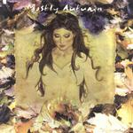

| Artist: | Mostly Autumn |
| Title: | The Last Bright Light |
| Label: | Cyclops CYCL 100 |
| Length(s): | 71 minutes |
| Year(s) of release: | 2001 |
| Month of review: | [04/2001] |
| 1) | ... Just Moving On | 1.30 |
| 3) | Half The Mountain | 5.22 |
| 4) | The Eyes Of The Forest | 2.53 |
| 7) | Prints In The Stone | 3.27 |
| 8) | The Last Bright Light | 8.14 |
| 9) | Never The Rainbow | 3.48 |
| 10) | Shrinking Violet | 8.34 |
| 11) | Helms Deep | 6.45 |
| 12) | Which Wood? | 2.45 |
| 13) | Mother Nature | 12.09 |
Half The Mountain has a very strong Kayak feel, especially because of the vocals and the vocal melody. Sensitive piano at first, but later on the strings set in and the song becomes fuller. Some peaceful flutes also play their role in this track, but there's definitely a sinister undercurrent here when the guitars make their noisy entrance and the fast paced piano right afterwards. The ending is again optimistic. A very good track.
The Eyes Of The Forest continues the album with clear acoustic guitar, a waterfall, wordless vocals and I guess you get the impression. Heather also sings some vocals telling us of the misuse of nature.
The Dark Before The Dawn opens like an SF saga. It turns however into one of the better jigs of the band. The hand of Faulds is in this track (yet I missed him in the line-up so I guess he left). The song has two faces: the sinister verses and the driving singalong chorus. The guitar screams out after the vocals give it a rest, under the pounding of the drums. Another pearl.
Hollow is a very sad track sung by Findlay. The Fender Rhodes make for an intimate atmosphere, a bit Floydian, a bit bluesy, but mostly just intimate, the final part reminds me of Riders On the Storm. That is until the guitar sets in. Again a very good track.
Folky acoustic guitar open Prints In The Stone, where we hear both singers this time, Heather doing the backing. Liam Davison also sings part of the vocals, this part is very Roger Waters like. The song is quite tranquil on the whole, at cost of being somewhat unremarkable. Iona fans will like it. By coincidence Troy Donockley also plays on this song.
The title track is a somber opening track. The chorus is more overtly melodic and features some brimming organ and male choral vocals. We then go back to the quiet verses. In this way we go back and forth a few times, the songs ends with mid-tempo folkiness, but plenty of rock in there as well. A very orgiastic ending. The rhythm section could have worked a bit more at variation. Their tameness contrasts too much with the aggressive guitar playing here.
Never The Rainbow is a short, driven catchy track. Good one, although the drummer's plain hacking away again. Shrinking Violet shows that Heather has the better voice of the two singers, but I think that I prefer to have Josh around singing as well. The song has a strong All About Eve influence, also because of the vocal melody. The song ends strongly.
Swirling flute and folkiness we find in the instrumental Helms Deep. As always thoroughly melodic and enjoyable. The song takes a turn for the progressive with Vanilla Fudge/Deep Purple influences in the organ ridden part. Quite active and for Mostly Autumn rather percussive and against the grain. Very strong.
Which Wood? is a classical sounding flute piece. Comes as a bit of a surprise, a bit like a Celtic alternate of Egyptian Reggae. The melody is very nice, but the song does not really fit here.
The final track is also the longest. It reminds me a bit of Hackett in the beginning, in his more faeric tracks. A bit mysterious sounding, acoustic for the most part in the first few minutes. The Sometimes, Sometimes, She Cries...For Love is terrific and the guitar that sets in gives all the power the song needs. However, we are only halfway. What ever may be next. Harpsichord, orchestral sounding passages, thunderous donnerwetter, the song cycles to the end. This ending is a bit in the style of The Nightsky.